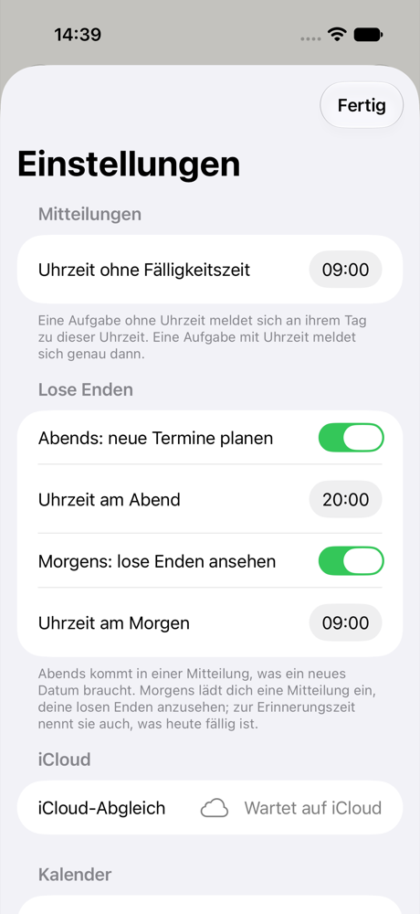
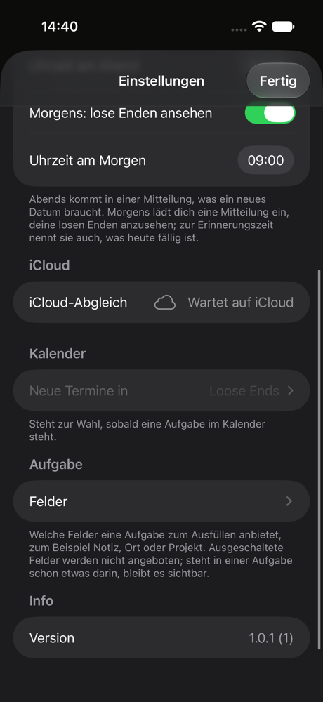
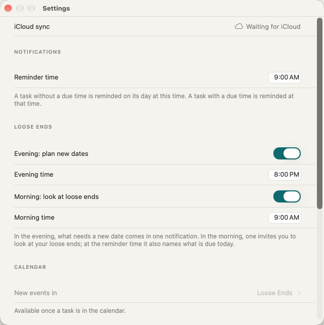
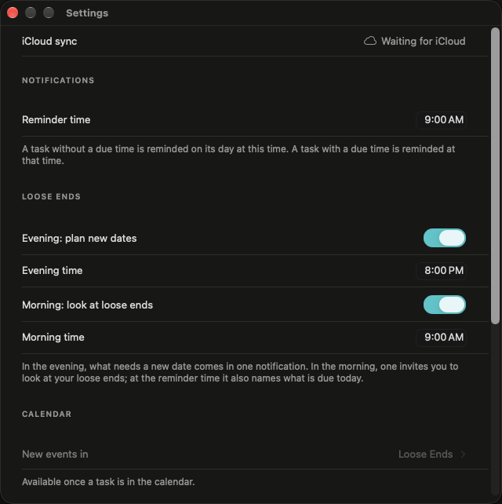

Damit Claude deine offenen Aufgaben sehen und neue anlegen kann, meldest du die App einmal mit Apple an. Dafür bekommen die Einstellungen einen Platz zum Anmelden, Abmelden und Löschen des Kontos. Bis der Datenschutztext das Konto nennt, sieht diesen Platz nur deine TestFlight-App, nicht die App im Store.
Die Einstellungen auf dem iPhone (Deutsch) und auf dem Mac, Stand 9. November. Ein Konto gibt es noch nirgends.




Dort, wo du schon siehst, wohin deine Aufgaben gehen. Der Knopf ist Apples eigener „Mit Apple anmelden“-Knopf (schwarz im Hellen, weiß im Dunkeln, so verlangt es Apple). Alles andere ist ein gewöhnlicher Eintrag in der Farbe der App. Rot erscheint nur in der Rückfrage vor dem Löschen.
Auf dem Mac steht die Gruppe wie dort üblich direkt nach dem iCloud-Eintrag, vor den Mitteilungen.
In den Einstellungen steht nur eine Zeile „Claude“ mit dem Zustand daneben. Sie öffnet eine Seite, die erst erklärt, was Claude darf, und darunter anmelden, abmelden und löschen anbietet. Mehr Platz für Erklärung, aber ein Tipp mehr, und die Einstellungen verraten nur ein Wort.
Gleich bleibt in beiden Fällen: Abmelden ohne Rückfrage, Löschen nur nach Rückfrage, und im Store bleibt der Platz verborgen, bis der Datenschutztext das Konto nennt.